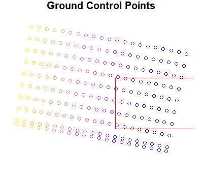
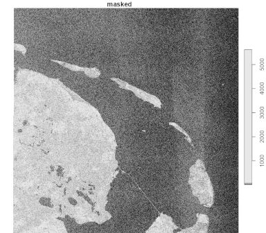
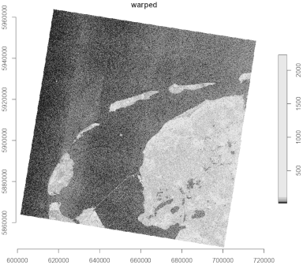

The Copernicus Data Space Ecosystem (CDSE) provides a wide range of data formats, each with their own quirks. Therefore, this package focuses only on wrapping the CDSE Application Programming Interface (API). Allowing to search and download the files. Because of the diversity of data and data formats, there is no consistent way of supporting this for CDSE from this package.
Instead, some frequently found formats are presented here, and a user case is demonstrated. With the purpose of making this package more applicable in practical settings.
Ground Control Points
In some cases data is stored as raster data, in the orientation in which the satellite made the observation. Such data may not have a valid Coordinate Reference System (CRS), but instead have Ground Control Points (GCP), to geo-reference the data. For any spatial analyses, you first need to warp that data to a meaningful projection. But any data masks are preferably applied to the raw data before such warps (which require interpolation).
Let’s demonstrate this step-by-step with a user-case. We have a
product Id, in a specific collection, and we have a bounding box: the
area of interest. We first obtain the Uniform Resource Identifier (URI)
for the S3 service of this product (dse_stac_get_uri()). We
then convert this URI to a Virtual System Interface (VSI) using
dse_s3_uri_to_vsi(). We do this because we can directly
connect with a product using the VSI in
stars::read_stars(). Note that we do need to run
dse_s3_set_gdal_options() first, this will make the S3
secrets available to the GDAL driver used by the stars
package.
This will create a proxy raster object. Meaning that no data is transferred unless necessary. This allows us to lazily specify operations for the raster object, before it is even downloaded. All these steps are shown below.
if (dse_has_s3_secret()) {
## Define the area of interest:
bbox <- st_bbox(c(xmin = 4.66,
ymin = 52.842,
xmax = 7.15,
ymax = 53.62), crs = 4326)
## Assume that we have already located the asset below within our
## area of interest:
id <- "S1A_IW_GRDH_1SDV_20241125T055820_20241125T055845_056707_06F55C_12F9_COG"
## And it's from this collection:
cllctn <- "sentinel-1-grd"
## Get the URI for the manifest.safe file. This is the preferred entry
## point into the data. It contains all bands and all meta-information
## (like accurate Ground Control Points):
uri_safe <- dse_stac_get_uri(id, "safe_manifest", cllctn)
## Translate the URI into a virtual system indicator (VSI), such that
## the stars package can interact with it:
vsi_safe <- dse_s3_uri_to_vsi(uri_safe)
## Set up the S3 credentials such that the stars package (and its
## underpinning GDAL library) will recognise them.
dse_s3_set_gdal_options()
## Create a stars proxy object from the VSI. No data is downloaded
## yet. But you can set up lazy data manipulations with tidyverse.
proxy <- read_stars(vsi_safe, proxy = TRUE)
}As we are working with the stars package in this
demonstration, we have to acknowledge that this package does not
preserve the GCPs when manipulating the raster. Therefore, we explicitly
read the information from the original product, such that we can later
rely on it.
As the raw data is not geo-referenced, we can also use the GCP information to subset the raw data to the area of interest. This in order to reduce data transfer and computational effort.
## Use `gdal_info` to retrieve the raster information
json_info <-
gdal_utils("info", vsi_safe, options = c("-json"), quiet = TRUE) |>
fromJSON()
## Get the ground control points for the specific raster.
## You will need it for subsetting the proxy.
gcp <-
st_as_sf(json_info$gcps$gcpList, coords= c("x", "y"), crs =
st_crs(json_info$gcps$coordinateSystem$wkt))
## A plot showing where the raster's GCPs are, and where the bbox lies
par(mar = c(1, 1, 1, 1))
plot(gcp["pixel"] |> st_geometry(), main = "Ground Control Points", col = NA)
plot(gcp["pixel"], add = TRUE)
plot(bbox |> st_as_sfc() |> st_geometry(), border = "red", add = TRUE)
## Determine which raster indices are within the bbox
## of our area of interest:
gcp_crop <-
st_crop(gcp,
st_transform(bbox |>
st_as_sfc() |>
st_buffer(units::as_units(1, "km")),
st_crs(json_info$gcps$coordinateSystem$wkt)))
dim_x <- st_get_dimension_values(proxy, "x") |> sort()
dim_x <- which(dim_x >= min(gcp_crop$pixel) & dim_x <= max(gcp_crop$pixel))
dim_y <- st_get_dimension_values(proxy, "y") |> sort()
dim_y <- which(dim_y >= min(gcp_crop$line) & dim_y <= max(gcp_crop$line))
The product contains two bands (VH and VV). Both bands share the same
geometry and use the same GCPs. Therefore, we can use the VV band to
mask the VH band, and only use VH values when VV measurements are at
least 30 dB. Calling stars::write_stars() will force the
lazy operations to be executed and only the require data is downloaded
and stored at the specified location.
masked_proxy <-
proxy[,dim_x, dim_y,] |>
st_apply(c("x", "y"), \(x) {
## From json_info$bands we know that band 1=VH and 2=VV
## We want VH but only when VV >= 30:
ifelse(x[2] >= 30, x[1], NA)
})
## Store the masked file:
masked_file <- tempfile(fileext = ".tif")
write_stars(masked_proxy, masked_file, chunk_size = c(1024, 1024),
NA_value = -9999)The VH band is now masked. But when it is plotted, you will notice (if you are familiar with the area) that the image is mirrored. That is because it is shown in the raster index coordinates.
masked <- read_stars(masked_file)
plot(masked, main = "masked")
In the process of masking, sub-setting and downloading the data, the GCPs got lost. So we first need to reintroduce them, before we can continue.
## The masked file has lost original GCP information
## So create a reference file where we explicitly add the GCP info
ref_file <- tempfile(fileext = ".tif")
## Update GCP info for selected raster indices:
gcp <-
json_info$gcps$gcpList |>
mutate(pixel = pixel - min(dim_x) - 1,
line = line - min(dim_y) - 1) |>
filter(line >= 0 & pixel >= 0)
opts <-
cbind("-gcp", as.matrix(gcp[, c("pixel", "line", "x", "y", "x")])) |>
apply(1, c) |> c()
## Create reference file with GCP info
gdal_utils(
"translate",
source = masked_file,
destination = ref_file,
options = c(opts,
"-a_srs", json_info$gcps$coordinateSystem$wkt,
"-a_nodata", "-9999") ## missing values
)Now that the GCPs have been reintroduced, we can warp the image to a relevant CRS. In our case we create a 10m x 10m grid in UTM31N projection.
## Warp the masked file to a fixed raster with meaningful CRS
## (In this case UTM31 with 10x10m cells)
warped_file <- tempfile(fileext = ".tif")
gdal_utils(
"warp",
source = ref_file,
destination = warped_file,
options = c(
"-t_srs", "EPSG:32631",
"-tps",
"-tr", c(10, 10), "-tap", "-r", "bilinear",
"-srcnodata", "-9999", ## missing values
"-dstnodata", "-9999", ## missing values
"-overwrite"))
warped <- read_stars(warped_file)
plot(warped, reset = FALSE, axes = TRUE, main = "warped")
Alternative Raster Packages
As this package is only a wrapper around the API and files retrieved
with the package can be handled by any suitable package. Here we choose
to work with stars as it is relatively easy to use and go
hand-in-hand with tidyverse operators.
However, files could just as well be processed with the terra package,
which is generally faster than stars. You
could also work with gdalraster
which provides low level access to GDAL library features for raster
files.